Worked example and final results
Section 1 runs DIRECT and Idea C on one curve, test by test. Sections 2 to 5 give the final test results of 24 November 2026 for Idea C and the four other searches.
- Start-up, Simulink, 99 patterns: 99.987 % mean, 99.955 % worst. Wrong peak in 1 of 99 (DIRECT: 26 of 99).
- Wrong peak, static bench, all start-ups: 0.78 % (DIRECT: 10.24 %).
- One search: 0.51 s on average, the same as DIRECT. PSO and GWO: 2.4 to 2.6 s.
- EN 50530 ramps: 99.52 % mean over the rows, 98.95 % on the worst row.
- 40 cloud events, Simulink: 98.72 % mean, recovery to 99 % of the GMPP power in 1.13 s.
- Four full days, open sky: 99.968 % of the GMPP energy with 521 searches.
- Computation: 6.4 µJ per search (DIRECT 9.9 µJ, PSO and GWO 21 to 23 µJ).
1Worked example: DIRECT and Idea C on one curve
The curve is an idealized partly shaded array, in volts for clarity. The controller works in duty, but a higher duty always gives a lower voltage, so the order of the points is the same. The current is 30 A up to 80 V. It falls to 18 A between 80 and 90 V as the bypass diodes switch, stays at 18 A up to 140 V, and falls to zero at 180 V.
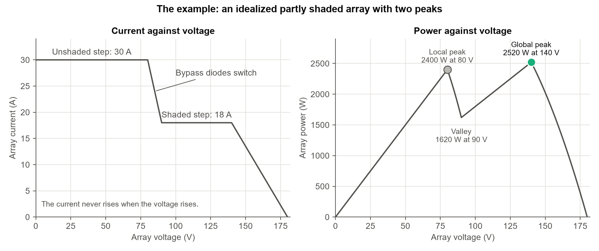
Figure 1. Local peak 2400 W at 80 V, valley 1620 W at 90 V, global peak 2520 W at 140 V.
DIRECT on the curve
Round 1 tests 90, 30 and 150 V. Round 2 tests 130 and 170 V. Round 3 tests 70, 110, 123 and 137 V. In round 4 the part from 0 to 60 V is the widest left, so DIRECT must test 10 V (300 W, 12 % of the peak) and 50 V (1500 W). The ceiling already rules this part out: below 60 V the power cannot exceed 60 V × 30 A = 1800 W, less than the 2460 W found at test 9. After 11 tests, DIRECT is near the peak, but no test tells it so.
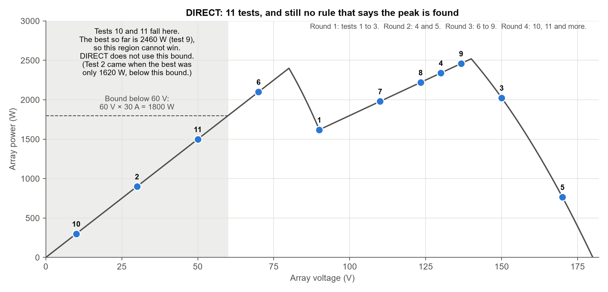
Figure 2. DIRECT: 11 tests and no stop rule. Tests 10 and 11 fall in a region that cannot win.
Idea C on the same curve
Idea C tests where its measured ceiling allows a better point, and nowhere else. It first tests 10, 90 and 170 V. The best power is 1620 W. The gap from 90 to 170 V has the ceiling 170 × 18 = 3060 W, and the gap from 10 to 90 V has 90 × 30 = 2700 W. Both are open. Each later test goes to the corner of the open gap with the highest ceiling: 146 V (2248 W), 82 V (2251 W), 141 V (2464 W), 150 V (2036 W), 142 V (2420 W) and 140 V (2508 W). Part 2, Figure 2 shows the first corner split.
After test 6 the best power is 2464 W, so a gap stays open only above 1.02 × 2464 = 2513 W. The two gaps of the left half have ceilings of 2465 W. Both close. The region from 10 to 90 V, with the local peak, is ruled out with no further test.
After test 9 every gap is closed, so the search stops at 2508 W, 99.5 % of the peak. No point in the range can give more than 2558 W. The local stage then climbs the last 0.5 %.
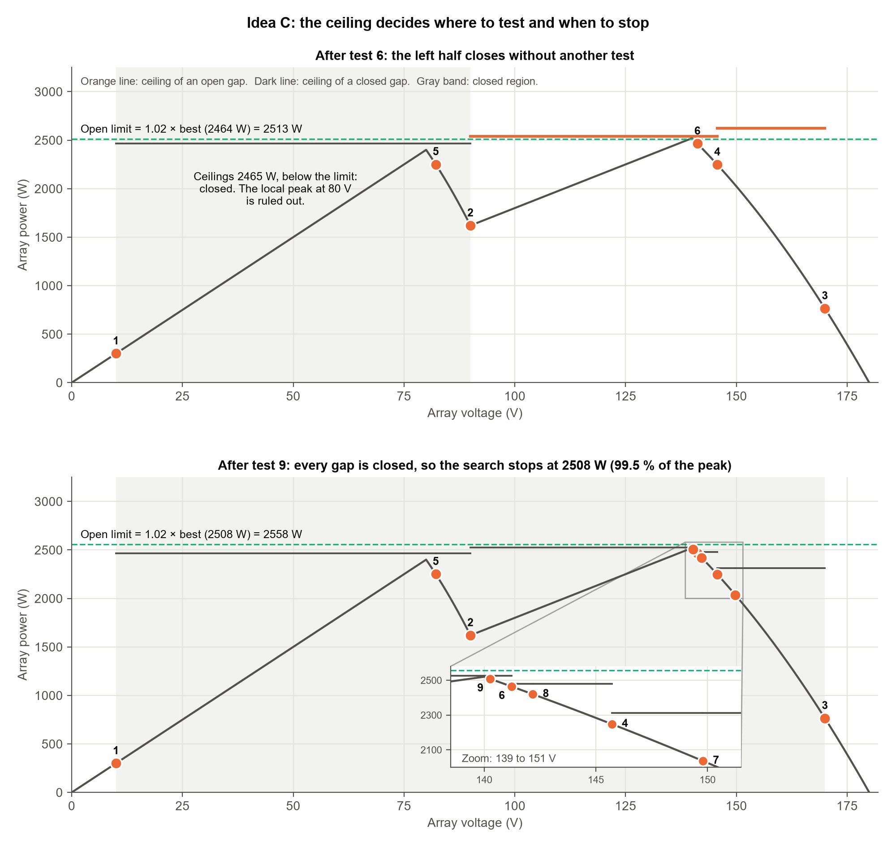
Figure 3. Idea C. Orange line: ceiling of an open gap. Dark line: ceiling of a closed gap. Grey band: closed region. Green dashed line: the open limit, 1.02 × the best power.
What this does to the tracking efficiency
A test at a fraction \(p\) of the peak power loses \(1-p\) test periods of energy. Summed over the tests:
| Search | Tests | Energy lost (test periods) | State at the end |
|---|---|---|---|
| Idea C | 9 | 2.4 | Stopped, global peak proven |
| DIRECT | 11 | 3.8 | Still searching, no stop rule |
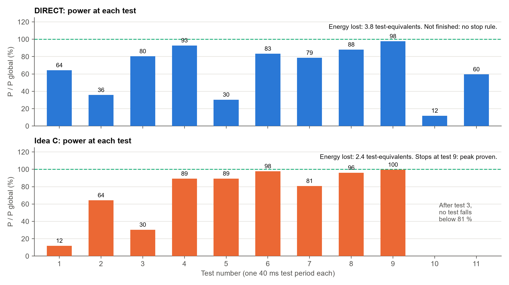
Figure 4. Power at each test as a share of the global peak. Both searches start with low-power tests, because they know nothing yet. After test 3, Idea C never falls below 81 %.
The gain does not come from shallower tests. It comes from two things: Idea C never tests a region that cannot win, and it stops with a proof. The proof also removes the loss on a wrong peak, which lasts as long as the shading. The numbers of this example are for teaching. The measured results follow.
2The test programme
All five searches use the same local stage and restart rule. Only the search differs.
| Phase | What it tests | Bench | Cases |
|---|---|---|---|
| 1b | Start-up from open circuit | Static | The nine patterns, the group patterns and 1800 random cases. 25 °C and 55 °C, sensor noise on and off. PSO and GWO with 30 seeds |
| 1c | Start-up from open circuit | Simulink | 99 patterns, 4 s each, sensor noise on |
| 2 | EN 50530 ramps | Static, with a Simulink check | The 10-50 % and 30-100 % sequences on P0 (uniform) and R1 (three peaks), 25 °C and 45 °C |
| 3 | Cloud events | Simulink | 40 cloud edges, 10 to 23 s each, from a fit of the 1 s irradiance data of the Oahu Solar Measurement Grid. Sensor noise on |
| 3n | Sensor noise | Static | 1, 3, 10 and 30 times the datasheet noise. Set A: the 40 cloud events. Set B: 100 pattern steps that move the GMPP |
| 4 | Full days | Static | Four days (January, April, July, October), open sky and morning shade, timer 900 s |
| compute | Cost of the controller | Compiled code, one PC core | Time of one decision and energy of one search (estimate) |
3Results of the five searches
Efficiencies in percent of the GMPP power or energy. Static: static bench. The best value in each column is not always Idea C. Section 5 discusses each case.
| Search | Start-up, Simulink: mean / worst | Wrong peak of 99 | Wrong peak, static | Search time (s) | EN 50530 mean | Cloud events, Simulink: mean / worst | Pattern steps: wrong / not recovered of 100 | Days, open sky | Energy per search (µJ) |
|---|---|---|---|---|---|---|---|---|---|
| Idea C | 99.987 / 99.955 | 1 | 0.78 % | 0.51 | 99.52 | 98.72 / 94.28 | 6 / 7 | 99.968 | 6.4 |
| Idea B | 99.988 / 99.949 | 2 | 1.09 % | 0.55 | 99.51 | 98.68 / 93.57 | 6 / 7 | 99.962 | 6.2 |
| DIRECT | 98.905 / 90.869 | 26 | 10.24 % | 0.51 | 99.42 | 98.62 / 94.44 | 12 / 13 | 99.921 | 9.9 |
| PSO | 99.978 / 98.800 | 3 | 1.75 % | 2.56 | 98.58 | 95.66 / 90.87 | 8 / 9 | 99.900 | 21.0 |
| GWO | 99.995 / 99.681 | 2 | 2.68 % | 2.40 | 97.25 | 90.83 / 81.12 | 7 / 8 | 99.814 | 23.2 |
4Figures of the final run
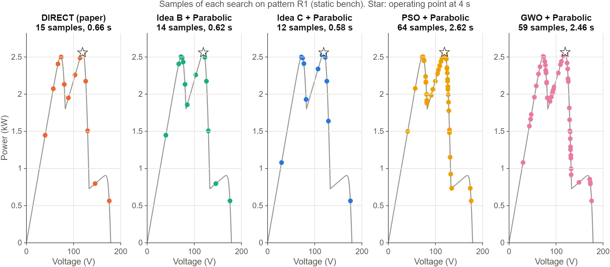
Figure 5. Samples of each search on pattern R1 (static bench). Idea C: 12 samples in 0.58 s. DIRECT: 15 samples in 0.66 s. PSO and GWO: 59 to 64 samples in about 2.5 s. Star: operating point at 4 s.
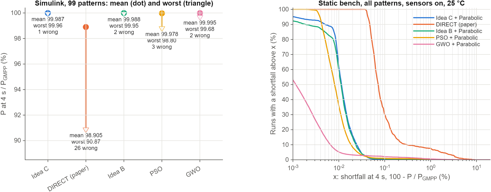
Figure 6. Start-up accuracy. Left: Simulink, 99 patterns, power at 4 s. Right: static bench, share of runs whose shortfall from the GMPP power is above x (log axis). DIRECT has a long tail: about 8 % of its runs fall short by more than 1 %.
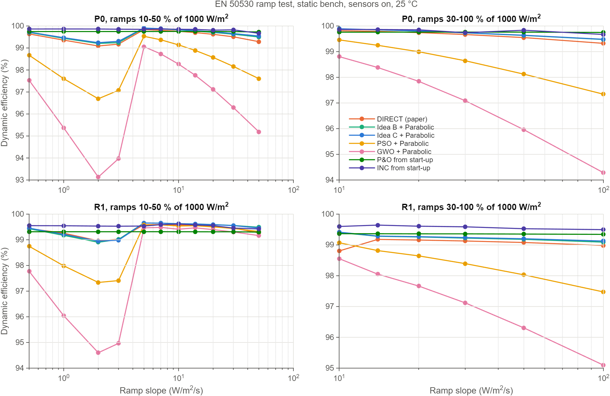
Figure 7. EN 50530 ramps on the static bench, with sensor noise. Idea C stays near or above 99 % on every row. PSO and GWO fall further, most at the slow slopes of the 10-50 % sequence and at the fast slopes of the 30-100 % sequence. Each of their searches lasts 2.4 to 2.6 s.
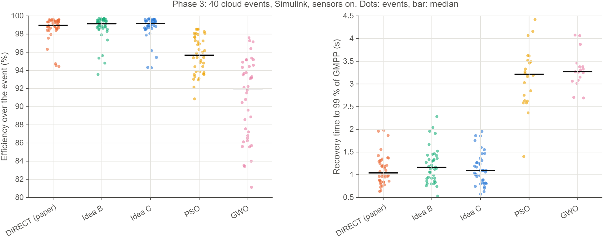
Figure 8. The 40 cloud events in Simulink. Left: efficiency per event (bar: median). Right: time to reach 99 % of the GMPP power. Idea C and DIRECT recover in about 1.1 s, PSO and GWO in about 3.2 s.
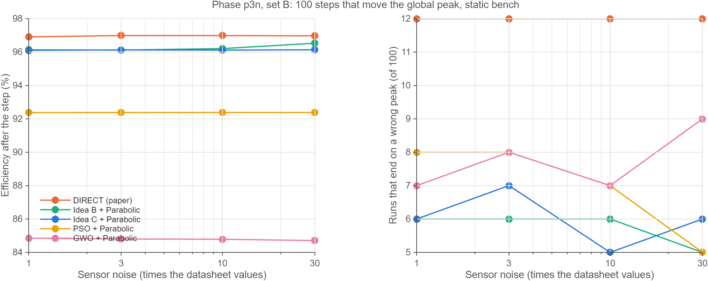
Figure 9. Sensor noise up to 30 times the datasheet values (static bench, set B, 100 pattern steps). The efficiency of Idea C does not change with the noise. Idea C ends on a wrong peak in 5 to 7 of 100 steps, DIRECT in 12.
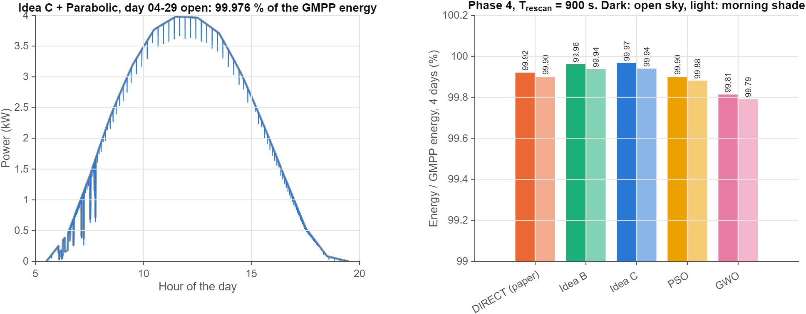
Figure 10. Left: Idea C on 29 April, open sky, 99.976 % of the GMPP energy. Each spike is one search. Right: four days, timer 900 s. Dark bar: open sky. Light bar: morning shade. Idea C has the highest share in both cases.
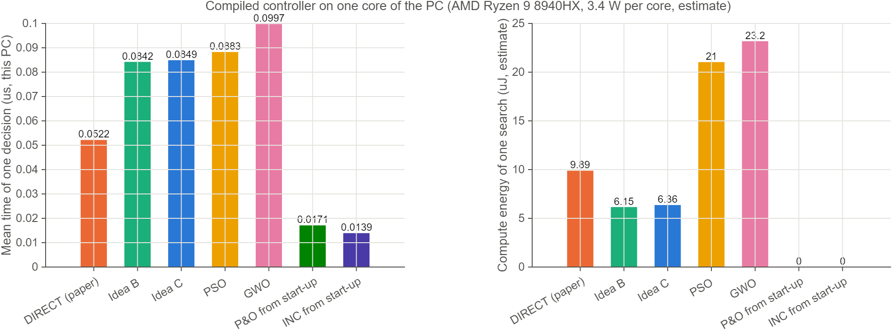
Figure 11. Cost of the compiled controller on one core of the PC (AMD Ryzen 9 8940HX, 3.4 W per core, estimate). One decision of Idea C takes 0.085 µs, which is negligible against the 20 ms period.
5What the results show
Where Idea C is better
- Reliability. Wrong peak in 1 of 99 Simulink start-ups (DIRECT: 26), in 0.78 % of the static start-ups (DIRECT: 10.24 %) and in 6 of 100 pattern steps (DIRECT: 12).
- Against the swarm searches. A search takes 0.51 s, against 2.4 to 2.6 s. On the cloud events: 98.72 %, against 95.66 % (PSO) and 90.83 % (GWO).
- Full days. 99.968 % of the GMPP energy on open-sky days, the highest of the five searches.
- Computation. 6.4 µJ per search, about a third less than DIRECT (9.9 µJ) and less than a third of PSO and GWO.
Where Idea C is about equal
- The search time is the same as DIRECT (0.51 s on average).
- On the cloud events in Simulink, Idea C leads DIRECT by only 0.10 points (98.72 % against 98.62 %). On the EN 50530 ramps it leads by 0.10 points (99.52 % against 99.42 %).
- On ramps of a curve with one peak, plain INC from start-up does as well, because it never needs a search.
Where Idea C is weaker, or the question is open
- Simulink against the static bench. Idea C loses 0.27 points on the cloud events in Simulink. The parabolic check does not settle on slow and deep cloud edges (part 2, section 9).
- Pattern steps. DIRECT has a higher mean efficiency after a step (96.91 % against 96.11 %), although it ends on a wrong peak twice as often. DIRECT also recovers faster after a step (0.83 s against 1.12 s on average). The cause is not yet analysed.
- Worst cloud event. DIRECT 94.44 %, Idea C 94.28 %.
- Time of one decision. 0.085 µs against 0.052 µs for DIRECT. Both are negligible against the 20 ms period.
6Questions to expect
Is Idea C a new algorithm?
No. It is an implementation of published parts: the ceiling of Boztepe et al. and Wang, Li and Ruan, the best-first rule of Piyavskii and Shubert, and the corner split of monotonic optimization (Tuy). The work of the project is to combine these parts, implement them for Simulink Coder, and test them on a 4 × 4 array against four baselines.
Why is Idea C more reliable than DIRECT?
Idea C stops only when its measurements prove that no region can beat the best power by more than 2 %. DIRECT has no such proof, so it stops on a budget and sometimes stops on a local peak.
Why not PSO or GWO?
They find the right peak, but each search takes 2.4 to 2.6 s of tests at low power. On the cloud events they lose 3 to 8 points against Idea C.
What does a search cost over a day?
One search takes about 0.5 s. Over four full days, Idea C made 521 searches, which cost 0.016 % of the energy. That is about 130 searches per day.
When can the ceiling be wrong?
When the light changes during the search, when a reading has not settled, or when a sensor is inaccurate. The restart rule starts a search only when the power is steady, and the parameter delta_s can widen the open test for a known sensor error.
Why compare by tracking efficiency?
It counts the loss during the search and the loss on a wrong peak in one unit, energy. EN 50530 defines the dynamic MPPT efficiency of inverters in the same way.
What are the limits of these results?
The Simulink gap of the parabolic check (0.27 points), one climate for the cloud data (Oahu), the long tests on the static bench, and no hardware test yet. Real-time tests on the OPAL-RT OP5707 are the planned next step.
Sources: part 1 and part 2 list every source. The figures of sections 4 come from reports/final_review/figures. The example figures come from docs/explainer/ceiling_example/make_figures.py.